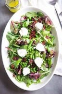

Simple Spring Salad

A good spring salad recipe has to have all the greens! A fresh spring mix is topped with a few vegetables, tart cherries and herb-coated cheese. A simple but delicious salad!/p>
This recipe is paleo and budget friendly! Remember you can always customize the ingredients to your liking!
Ingredients
- 1 bunch spring mix
- 1 cup cooked, chopped green beans
- 1/2 cup cooked peas
- 1/2 cup dried cherries
- 4 ounces herbed goat cheese (sub with a different cheese if you don't like this one!)
- 1/4 cup olive oil
- 1 teaspoon stone ground mustard
- 3 tablespoons white wine vinegar
- 1 clove garlic
- Salt to taste
Steps
- Arrange spring mix on a serving platter, top with green beans, peas, cherries, and goat cheese. Whisk together the olive oil, mustard, vinegar, and garlic. Add salt and pepper to taste. Drizzle dressing over salad just before serving, toss to coat.